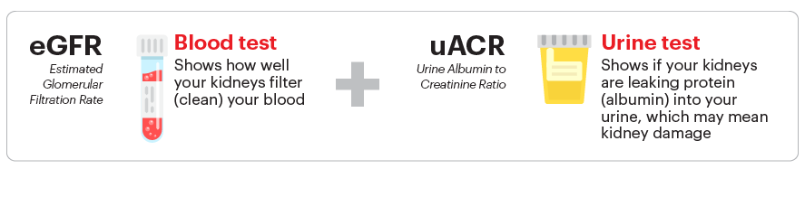

10 Tanda Peringatan Dini Penyakit Ginjal Kronis yang Sering Diabaikan

Memahami Gagal Ginjal Kronis: Mengenal, Mencegah, dan Mengelola

Penyakit ginjal kronis merupakan kondisi medis serius yang menggambarkan penurunan bertahap fungsi ginjal. Progresif dan seringkali diam, penyakit ginjal kronis dibagi menjadi beberapa stadium yang mencerminkan tingkat keparahan penyakit. Dari deteksi dini hingga gagal ginjal, memahami stadium penyakit ini dapat membantu pasien dan penyedia layanan kesehatan merencanakan pengobatan yang lebih efektif dan mengambil langkah pencegahan yang dapat mengubah jalannya penyakit.

Stadium awal penyakit ginjal kronis sering kali tidak menunjukkan gejala yang jelas. Di stadium ini, kerusakan ginjal dapat dideteksi melalui tes laboratorium yang menunjukkan adanya marker dalam urine seperti protein atau darah, serta melalui imaging atau biopsi. Fungsi ginjal mungkin masih normal atau hampir normal, yang ditunjukkan dengan laju filtrasi glomerulus (GFR) 90 ml/min/1.73 m² atau lebih. Pengelolaan pada stadium ini fokus pada intervensi untuk mengurangi risiko progresi penyakit dan melibatkan pengendalian tekanan darah, pengelolaan diabetes, dan modifikasi gaya hidup.
Di stadium 2, GFR pasien berkisar antara 60 hingga 89 ml/min/1.73 m². Meskipun penurunan fungsi ginjal masih dianggap ringan dan gejala mungkin minimal atau tidak ada, deteksi dini melalui penanda biokimia dan pemeriksaan klinis tetap penting. Pengelolaan mencakup pemantauan rutin kondisi kesehatan dan intervensi untuk mengendalikan penyebab dasar kerusakan ginjal.
Stadium 3 dibagi menjadi dua sub-stadium: 3a (GFR 45-59 ml/min/1.73 m²) dan 3b (GFR 30-44 ml/min/1.73 m²). Pasien mungkin mulai mengalami gejala seperti kelelahan, masalah tidur, dan pembengkakan pada kaki dan pergelangan kaki. Pengelolaan di stadium ini lebih intensif, dengan fokus pada pengendalian komplikasi seperti hipertensi dan anemia, serta pemantauan erat terhadap kemajuan penyakit.
Dengan GFR 15-29 ml/min/1.73 m², stadium 4 seringkali disertai dengan gejala yang lebih parah, termasuk penurunan nutrisi, nyeri tulang, kesulitan berkonsentrasi, dan perubahan warna kulit. Intervensi medis menjadi lebih kompleks, mencakup konsultasi dengan spesialis ginjal (nefrologis), manajemen diet khusus, dan persiapan untuk kemungkinan dialisis atau transplantasi ginjal.
Stadium akhir penyakit ginjal kronis, atau gagal ginjal, terjadi ketika GFR turun di bawah 15 ml/min/1.73 m². Di tahap ini, dialisis atau transplantasi ginjal sering menjadi perlu. Gejala seperti mual, muntah, kehilangan nafsu makan, dan gangguan kognitif menjadi lebih umum. Terjadinya Penyakit Ginjal Kronis Stadium 5 biasanya diawali dengan kondisi atau penyakit lain yang mempengaruhi fungsi ginjal dalam waktu yang lama. Kondisi dan penyakit yang dapat mempengaruhi fungsi ginjal antara lain hipertensi, diabetes tipe 1 atau 2, penyakit autoimun seperti lupus serta penyakit ginjal lain.
Memahami stadium penyakit ginjal kronis membantu dalam menargetkan intervensi pada waktu yang tepat untuk memperlambat progresi penyakit dan mempertahankan kualitas hidup pasien. Pendidikan pasien tentang gejala dan pengelolaan penyakit, serta keterlibatan aktif dalam pengobatan mereka, adalah kunci untuk mengelola penyakit ginjal kronis secara efektif.